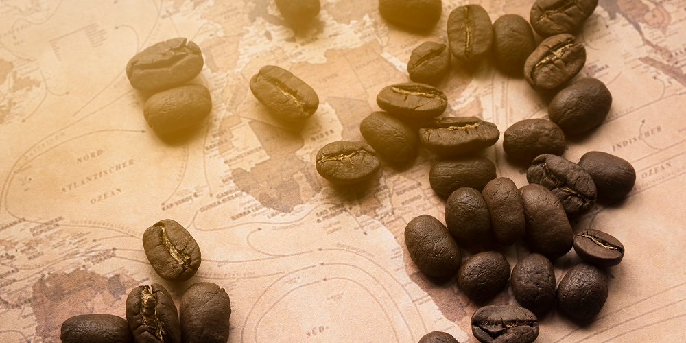
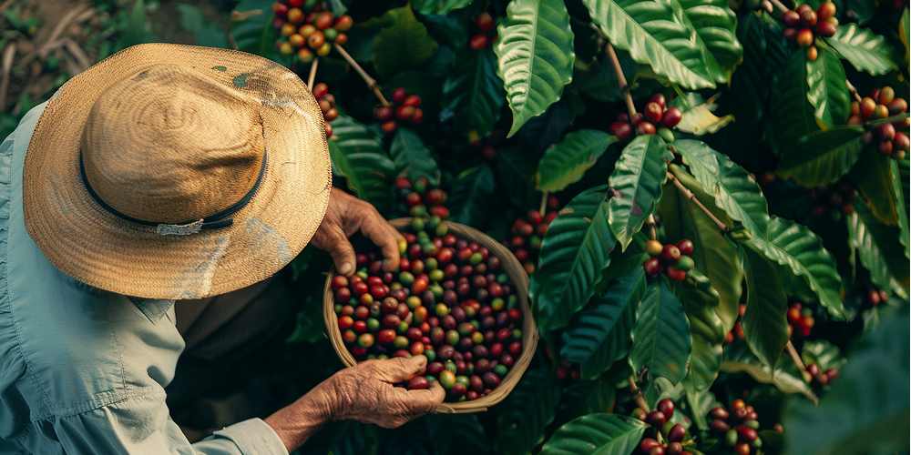

Библиотека знаний о кофе
Все статьи по категориям
История и культура
Выращивание и производство
Приготовление и рецепты
Рекомендуем к прочтению

История кофе и его названия
Откройте увлекательную историю происхождения кофе и узнайте, как этот напиток завоевал мир...
Читать далее

Как растет кофе: от зерна до чашки
Познакомьтесь с удивительным путешествием кофейного зерна от плантации до вашей чашки...
Читать далее
Кофейные традиции народов мира
Исследуйте разнообразие кофейных ритуалов и традиций в разных культурах по всему миру...
Читать далее